When Snapchat went public in Spring 2017, NPR turned to Youth Radio to help listeners understand the huge appeal of the app, which teens understand intuitively, while older people can--let’s be honest--be completely clueless about how it even works.
Whether you love Snapchat or hate it, use this tutorial to make your bootleg version. Your app will let users take a photo, draw on it, add things to it, and send it to your friends. We can’t wait to see what you come up with from there!
Check out Youth Radio’s Snapchat story for NPR here.
Let's make an app that can take a photo and set it as the background, draw different-colored dots and lines on the photo, and sends the photo to your friends.
Start by connecting the companion app so you can test this on your mobile device. If you don't know how to connect. click here.
This is the initial screen you will see in the viewer. The components include a label, two HorizontalArrangements, a button, a canvas, a camera, and an AccelerometerSensor.
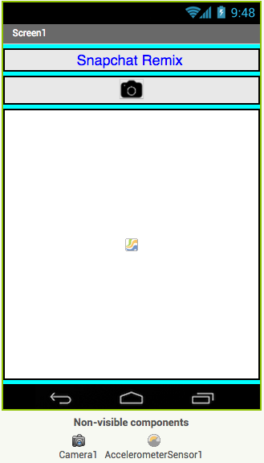
First, we will change the app so that when you tap the "Take a picture" button, the camera will turn on so you can take a picture.
Begin by clicking on the "Blocks" button in the upper right corner.
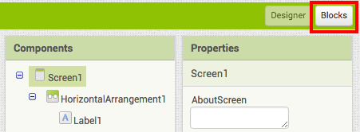
Click on the pictureButton drawer on the left.
Click and drag the "when pictureButton.Click" button into the workspace.
Click on the Camera1 drawer.
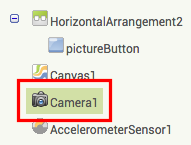
Click and drag "call Camera1.TakePicture" to the workspace and add it to "when pictureButton.Click".
The blocks should look like this:
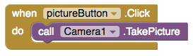
Now, we'll set the image we took with the camera to be the background image of the camera. Click on Camera1 again inside blocks.
Then drag the "when Camera1.AfterPicture" block to the Viewer.
Now click Canvas1 in Blocks.
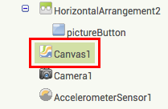
And scroll down and drag "set Canvas1.BackgroundImage to" to the workspace.
Connect "set Canvas1.BackgroundImage to" to "when Camera1.AfterPicture".
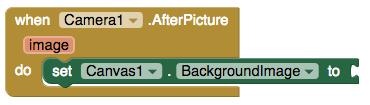
Click on the red image button on the "when Camera1.AfterPicture" block and click on "get image".
Connect this new block to "set Canvas1.BackgroundImage to" so your blocks look like this:
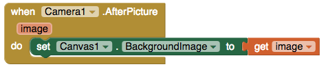
Test the "take a picture" button and watch the image appear on the canvas!
Now, we'll learn how to draw on the canvas.
Click on Canvas1.
And choose the "when Canvas1.Dragged" block.
Click on Canvas1 again and choose "call Canvas1.DrawLine". Connect it to the "when Canvas1.Dragged" block.
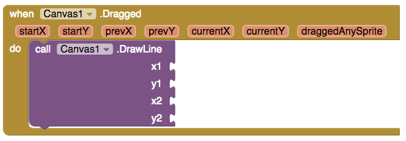
The app has to be told where each line should start and end. In order to connect each line to the last, hover over prevX and choose "get prevX".
Drag "get prevX" to the x1 socket.
Repeat with the other sockets, corresponding prevY to y1, currentX to x2, and currentY to y2.
Take a second to test out your app again using your AI Companion or Emulator!
Finally, we want to clear our canvas by shaking our device.
Click on AccelerometerSensor1.
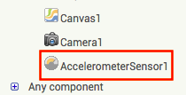
Choose the "when AccelerometerSensor1.Shaking" block.
Now, click on Canvas1.
Scroll down, and drag the "call Canvas1.clear" block to connect it to the "when AccelerometerSensor1.Shaking" block.
Try it out on your device. What happens?
Change up this basic tutorial by adding more features using the ideas in the next section.
Expand your app
Create a trash button to erase your image instead of shaking.
Connect a button that clears the canvas similar to how the Accelerometer Sensor does.
Click on "My Projects" button on the top menu bar.
Click on the project you want to share, then click on "Publish to Gallery" button.
Fill in all the details and click the "PUBLISH" button.
Click on "SHARE" button to get the link to the app.
Copy and paste the link in the space below.
Your link is not correct. Follow the instructions above to get the correct link.
Thanks for sharing your project! Check out the shared projects section below.
Published apps
Hello World
Add a trash button
Components you need: Button (in User Interface)
In Designer, add your button to your HorizontalArrangement2 and rename your button to something descriptive, such as trashButton.
Upload and add an image as an icon in the Properties panel, such as one from The Noun Project. Change the height and width of the button.
Next, click on Blocks and click on trashButton. Grab the "when trashButton.Click" block.
Then click on Canvas1 and connect the "call Canvas1.clear" block.
Draw dots on the canvas
Components you need: None!
In Blocks, click on Canvas1 and choose the "when Canvas1.Touched" block.
Click on Canvas1 again and choose "call Canvas1.DrawCircle".
Click on the red x button and choose the "get x" block and drag it to the centerX socket. Repeat with y.
Click on the Math drawer and drag out the 0 block. Connect it to the radius socket and change the number to 5 (or any other number).
Pick image from device
Components you need: Image Picker (media)
In Designer, change your image picker's text or icon.
Next, go to Blocks, click on ImagePicker1, and select "when when ImagePicker.AfterPicking".
Click on Canvas1, and connect the "set Canvas1.BackgroundImage to" block.
Click on ImagePicker1, scroll down, and connect the "ImagePicker1.Selection" block.
Change color of paint
Components you need: Buttons (User Interface), HorizontalArrangement (Layout)
In Designer, add the buttons to the HorizontalArrangement1 and change (or delete) the text, color, shape, and size of the buttons. Also rename the buttons for clarity.
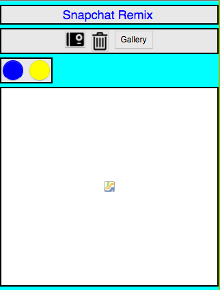
Next, go to Blocks and click on blueButton. Drag out the "when blueButton.Click" block.
Click on Canvas1 and choose "set Canvas1.PaintColor to" and connect it.
Click on Colors and choose a blue colored block and connect it.
Repeat for the yellow button.
Random color button
Components you need: Button (User Interface).
Click on randomButton and drag out "when randomButton.Click". Click Canvas1 and connect "set Canvas1.PaintColor to".
The random colors will be selected from a list of colors. Click Lists and select "pick a random item list".
Click Lists again and drag out "make a list".
Click on the blue gear and click and drag as many items to your list as you want.
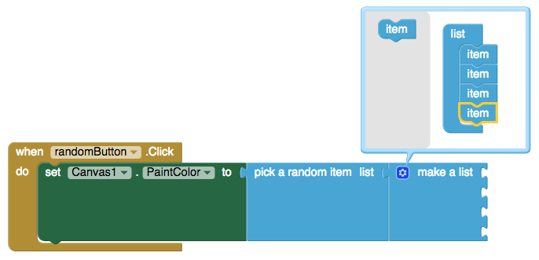
Click on Colors and drag out color blocks in order to fill all the empty sockets.
Add text to canvas
Components you need: TextBox Component (User Interface), Button (User Interface)
In Blocks, click on textButton and choose "when textButton.Click". Click on Canvas 1 next and connect "call Canvas1.DrawText".
Next, click on Math and drag out two 0 blocks and connect them to the x and y sockets. Change the values to 10.
Click canvasText and add "canvasText.Text" to the text socket.
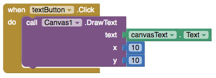
Add a share button
Components you need: Sharing Component (Social), Button (User Interface)
In Blocks, click on shareButton and grab the "when shareButton.Click" block. Then click on Sharing1 and connect the "call Sharing1.ShareFileWithMessage" block.
Next, click on Canvas1 and connect "call Canvas1.SaveAs" to the file socket.
Finally, click on Text in the built-in blocks and add two empty text blocks. Name your file and add a message!
Share picture to Twitter
Components you need: Twitter Component (Social), Button (User Interface)
Fill out the form, creating a name, description, and putting in placeholders for the website and callback URL. Agree to the developer aggrement and create your new application.
When your application has been created, click on the Keys and Access Tokens tab.
Copy the Consumer Key and the Consumer Secret.
In Designer, click on Twitter1 (in Components) and in Properties, add your created Consumer Key and Consumer Secret to the corresponding boxes.
In Blocks, click on twitterButton and grab the "when twitterButton.Click" block. Then click on Twitter1 and connect the "call Twitter1.Authorize" block.
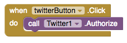
Next, click on Twitter1 again and drag out "when Twitter1.IsAuthorized".
Click on Twitter1 again and connect "call Twitter1.TweetWithImage"
Go to Canvas1 and connect "call Canvas1.SaveAs" to the ImagePath socket.
Finally, click on Text and grab two empty quotes. Rename them and connect them to the status socket on the "call Twitter1.TweetWithImage" block and to the filename socket on the "call Canvas1.SaveAs" block.